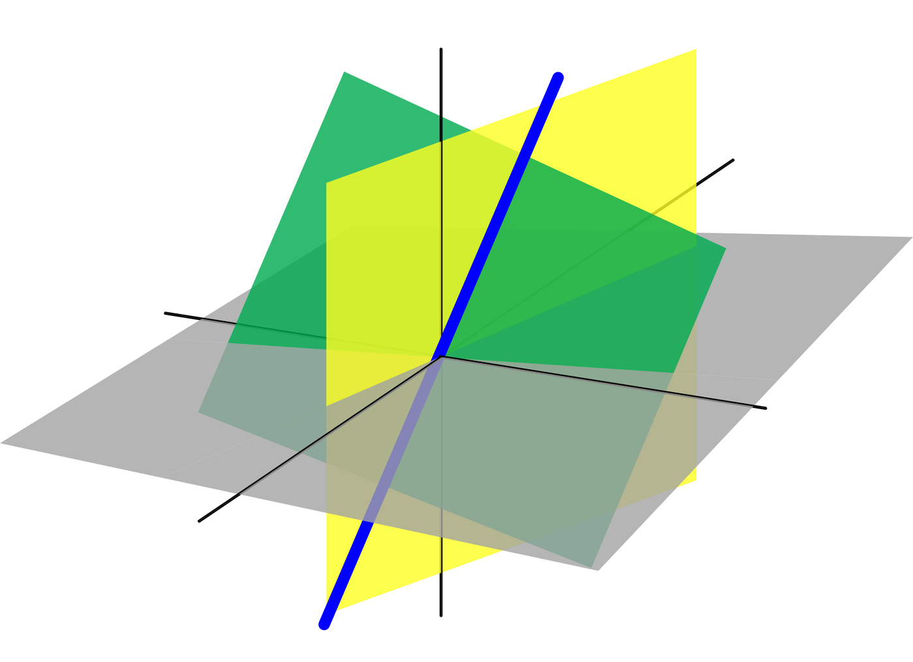

A linear equation in
variables is
The coefficients
cannot all be 0, and variables
are raised only to the first power.
A linear system consisting of
linear equations in
variables
,
is represented as
The solution of a linear system in
unknowns is a sequence of
numbers
.
Any system of linear equations behave in one of these ways:
The system has no solution
The system has a unique solution
The system has infintely many solutions
If the linear system has at least one solution, it is
consistent.
3.2 Homogenous Linear System
If
,
it is a homogenous linear system. Every homogenous system has at least
one solution, known as the trivial solution,
Hence, every homogenous system is consistent, and
has only the trivial solution, or
has infintely many solutions in addition to the trivial
solution
3.3 Representation as Matrix
Consider a linear system of two equations:
Coefficient matrix:
Augmented matrix:
3.4 The two fundamental questions
about any linear system
Is the system consistent?
If a solution exists, is it unique?
The following concepts are tools to answer these questions.
3.5 Row Echelon and Reduced Row
Echelon Form
Row equivalent matrices can be transformed to each other by one of
these elementary row operations:
Swap: Swapping two rows
Scale: Multiply a row by a non-zero
constant
Pivot: Add a multiple of one row to another
row
3.5.1 Row Echelon Form
Properties:
All rows having only zero entries are at the bottom.
The leftmost non-zero entry (i.e. leading entry) of every
non-zero row (i.e. the pivot) is to the right of the leading entry of
every row above.
A matrix can have multiple REF forms, depending on the steps taken.
Matrix in row echelon form (and not in reduced row echelon form):
3.5.2 Reduced Row Echelon Form
Properties:
The matrix is in row echelon form.
The leading entry (or pivot) of every non-zero row is 1.
Every column containing a leading 1 has zeroes in its other
entries.
Every matrix has a unique RREF matrix, regardless of the steps
taken.
Example matrix in reduced row echelon form:
3.5.3 Gaussian and Gauss-Jordan
elimination
Consider this linear of system equations:
Row operations
Augmented matrix
We obtain the the row echelon form using Gaussian elimination. Note
that top-down approach uses the rows above to introduce zeroes below the
pivots.
This is also the forward phase of Gauss-Jordan elimination.
Row operations
Augmented matrix
We obtain the RREF using Gauss-Jordan elimination. Note that
bottom-up approach uses the rows below to introduce zeroes above pivots,
and to transform the pivots to 1.
This is the backward phase of Gauss-Jordan elimination.
Note that of the EROs, only Scale and Pivot were used.
3.6 Answering the fundamental
questions
Using row reduction to solve a linear system:
Write the augmented matrix of the linear system.
Use row reduction algorithms to obtain row echelon form of the
augmented matrix. Here we can decide if the system in consistent. If it
is, go to the next step.
Continue row reduction algorithm to obtain reduced row echelon
form.
Write the system of equations corresponding to this
matrix.
Rewrite each nonzero equation so that the leading variable is
expressed in terms of any free variables.
3.6.1 Example (Not consistent
system)
Determine if this linear system is consistent:
Row operations
Augmented matrix
Initial Matrix
The last equation is
i.e.
.
Therefore the system is inconsistent.
3.6.2 Example (Consistent system,
infinite solution)
Determine the solution to this linear system:
Row operations
Augmented matrix
Initial System
Note: Matrix is now in Row Echelon
Form (REF)
Note: Matrix is now in Reduced Row
Echelon Form (RREF)
We first note that the system is consistent.
Also, not every variable column has a pivot (in either REF or RREF).
Hence, the system has infinitely many solutions.
From the RREF, we obtain this system of equations:
Solving for the leading variables in terms of the free variables,
The general solution is expressed parametrically,
Alternative: Gaussian elimination with
back-substitution for larger linear systems (instead of Gauss-Jordan
elimination).
From the REF,
Solving for the leading variables,
Back-substitute the bottom equations into those above it:
Assigning arbitary parameters
to the free variables, we would get the same general solution.
3.6.3 Example (Consistent system,
unique solution)
Determine the solution to this linear system:
Row echelon form:
First, note that the system is
consistent.
Since every variable column contains a pivot, there is a unique
solution. (There are no free variables)
Reduced row echelon form:
Note that the RREF of every
linear system with a unique solution is the identity matrix.
The solution to the linear system can be read off directly from the
RREF:
3.7 Linear combination of
vectors
Given vectors
in
and given scalars
,
the vector
defined by
is called a linear combination of
with weights
.
3.7.1 Example
Let
,
,
and
.
Determine whether
can be written as a linear combination of
and
.
The vector equation
is represented by the augmented matrix
:
After row reduction, we obtain the Reduced Row Echelon Form (RREF):
From the RREF, we can read the unique solution for the weights:
Thus,
is a linear combination of
and
:
3.8 Span
If
are vectors in
,
then
Span
is the set of all vectors that can be written in the form
where
are scalars.
It is also called the subset of
spanned by
.
3.8.1 Geometric intepretation
Span of a single nonzero vector: All multiples of that vector
form a line passing through the origin.
Span of two non-parallel vectors: All combinations of these two
vectors form a plane passing through the origin.
Span of three vectors: If they are linearly independent to each
other, their span is
.

Spans as lines, planes, and real space
3.8.2 Example
Let
,
,
and
.
Determine if
is in the
.
The augmented matrix is:
Performing row reduction to obtain row echelon form,
The third row corresponds to the equation
,
which is a contradiction.
Therefore, the system is inconsistent, and
is not in the
.
3.9 The Matrix Equation
Recall matrix multiplication as linear combinations of columns of
.
If
is an
matrix, with columns
,
and if
is in
,
then
is the linear combination of the columns of A using the corresponding
entries in
as weights,
Further, if
is in
,
then
has the same solution as
i.e. the same solution to the linear system represented by this
augmented matrix
3.9.1 Example
Let
and
. Is the equation
consistent for all possible values of
?
The augmented matrix is
Performing row reduction, the row echelon form is
For the system to be consistent,
we need
The columns of A lie on a plane passing through the origin in
,
and the equation of the plane is
.
3.9.2 Spanning
If
Span{}=,
every vector in
is a linear combination of
.
These statements are logically equivalent:
has a solution for each
in
.
i.e. Any vector in
can be found through
.
Each
in
is a linear combination of the columns of
.
The columns of
span
.
has a pivot position in every row.
If not, the last row will have all zero entries. Then
can be constructed with a 1 in the last row, making the linear system
inconsistent. **Not to be confused with a pivot in every variable
column, which shows uniqueness of solution for the linear
system.
Some properties, for
and
in
,
and
a scalar:
3.9.3 Note on Pivots
A pivot in every column
there are no free variables
the linear system
has at most one solution.
Columns of
are linearly independent. The system is either inconsistent or has a
unique solution.
Unique Solution.No Solution
()Pivots in every column.
A pivot in every row
the linear system
has at least one solution, for every
.
This also means the columns of
span
,
where
is the number of rows.
pivots mean
dimensions
(
linearly independent rows) to span
.
Wide matrices with pivot in every row are always consistent
and have infinitely many solutions (at least one free variable left
over).Tall matrices cannot have a pivot in every row. Row of zeros
leads to "No Solution" if
.Pivots on every row.
There is a pivot in every row and column
is a square matrix
The system
has a unique solution for any
.
Pivots in every row and column lead to a unique
solution.
Hence, wide matrix can never have unique solution, tall matrix can
never have solution for every b.
3.10 Solution Sets of Linear
Systems
Parametric vector form of the solution set of
is
If
,
it is a homogenous system of equations.
Parametric vector form for the solution to a homogenous system is
is then one particular solution to
(corresponding to t=0).
basically translates
to pass through
instead of the origin.
3.10.1 Example (homogenous
system)
Determine if this homogenous system has a nontrivial solution:
The augmented matrix is
Performing row reduction
operations, the row echelon form is
We get
Solving,
Since
is a free variable, we can express the solution vector
as:
Every solution to
in this case is a scalar multiple of
3.10.2 Example (non-homogenous
system)
Describe all solutions of this non-homogenous system:
The augmented matrix is
The reduced row echelon form is
We get
The solution set is
3.11 Linear Independence
A indexed set of vectors
in
is linearly independent iff the vector equation
has only the trivial solution.
If
that are not all zero, s.t.
then the set of vectors is linearly dependent.
In other words, if
is linearly dependent, and
,
then some
,
,
is a linear combination of the preceding vectors
.
In a matrix, if all the columns have a pivot, then the columns are
linearly independent.
3.11.1 Example
Consider the set of vectors in
:
First construct the matrix
and reduce it to REF to locate the pivots:
Column 1 and Column 2 have
pivots, Column 3 is the first column without a pivot. This indicates
that
is the first vector in the sequence that is linearly dependent on those
preceding it.
We can extract the vectors up to
into an augmented matrix
:
Consistency: The absence of a pivot in the augmented column (the
right-most column) proves the system is consistent; thus, a linear
combination exists.
Unique Weights: From the REF, we can back-substitute:
Since
corresponds to a non-pivot column in the original set, it is redundant.
Specifically:
Takeaway: If there are columns with no pivot, the set of vectors is
linearly dependent.
3.11.2 Wide matrices
Naturally, columns of a wide matrix are linearly dependent.
If
,
the matrix cannot have a pivot in every column
there must be a free variable
has non trivial solution
columns of
are linerly dependent.
3.11.3 Set with zero vector
If
in
contains the zero vector, then
is linearly dependent.
WLOG, suppose
,
then
shows that
is linearly dependent.
3.12 Linear Transformations
A transformation
is a rule that assigns to each vector
in
a vector
in
.
- domain of
- codomain of
- image of
Set of all images
- range of
A transformation
is linear if it satisfies:
Generalization:
Example:
,
is called a contraction when
and a dilation when
.
3.12.1 Finding the Standard
Matrix
Let
be a linear transformation. Then there exists a unique matrix
such that
is also known as the standard matrix for the linear transformation
.
Here,
is the
matrix whose
column is the vector
,
where
is the
column of the identity matrix in
,
i.e.
For
,
,
Example:
Let
,
so
and
.
Suppose
is a linear transformation from
to
such that
and
.
Find the formula for the image of an arbitrary
in
.
There exists a unique matrix
such that
for all
in
.
The columns of
are the images of the basis vectors
and
:
For an arbitrary
in
,
the formula for the image is:
Example:
Let
be the transformation that rotates each point in
about the origin through an angle
,
with counterclockwise rotation for a positive angle. Find the standard
matrix
for this transformation.
To find the standard matrix
,
we determine the images of the standard basis vectors
and
under the rotation
: